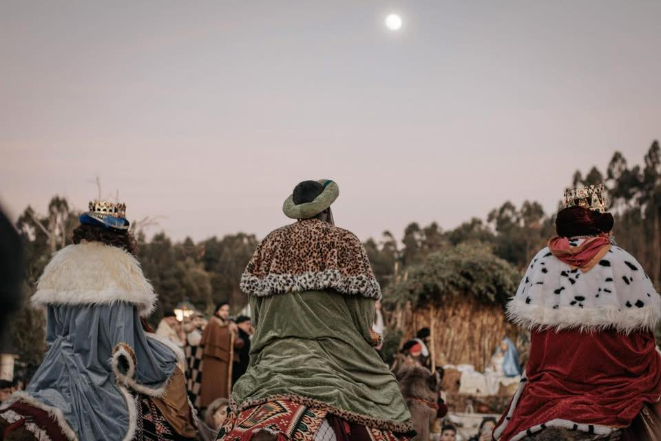
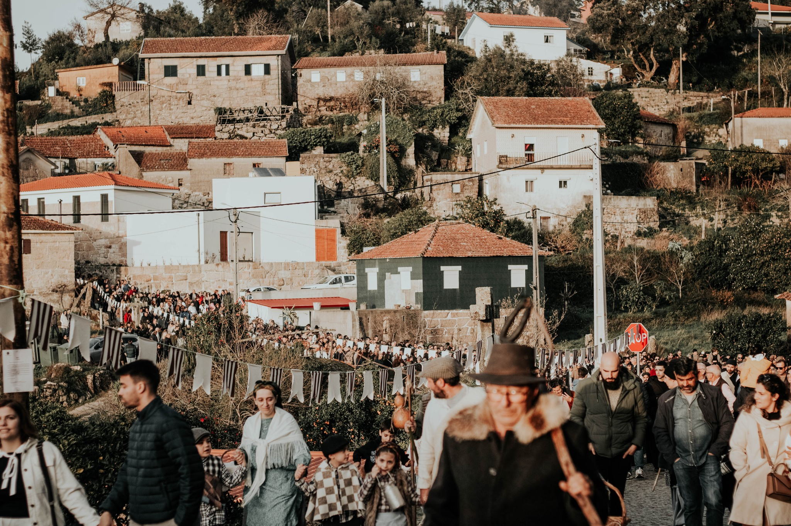
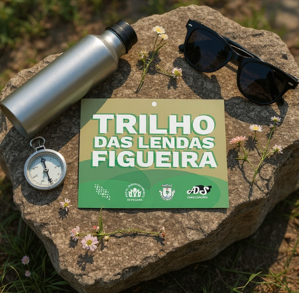
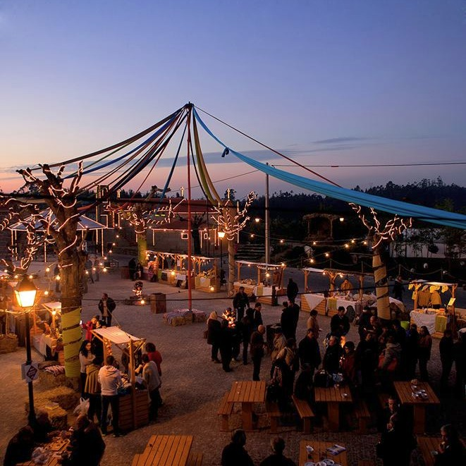

8, 9 e 10 de janeiro de 2027
Auto dos Reis Magos 2027
O evento decorre de 8 a 10 de janeiro, em Figueira, Penafiel. O programa e as datas das representações serão anunciados quando estiverem confirmados.
Um Festival de Inverno para Celebrar a Tradição e o Futuro
8, 9 e 10 de janeiro de 2027 · Figueira, Penafiel
Descubra o Auto 2027
O evento decorre de 8 a 10 de janeiro, em Figueira, Penafiel. O programa e as datas das representações serão anunciados quando estiverem confirmados.
A GENOMA é uma associação sem fins lucrativos sediada em Figueira, Penafiel. Desde 2017, promovemos iniciativas culturais, sociais e educativas para aproximar e envolver a comunidade local.
Ao longo dos anos, organizámos workshops, feiras e encontros. Entre as iniciativas recentes estão o Trilho das Lendas e o Real Mercado do Auto dos Reis Magos; a associação organiza também o Auto dos Reis Magos.
Localização: Figueira, Penafiel

Contacto: geral@associacaogenoma.pt

Uma caminhada de 12,4 km por Figueira, entre moinhos ancestrais e paisagens únicas.

O Real Mercado do Auto dos Reis Magos, com artesanato e sabores da terra.